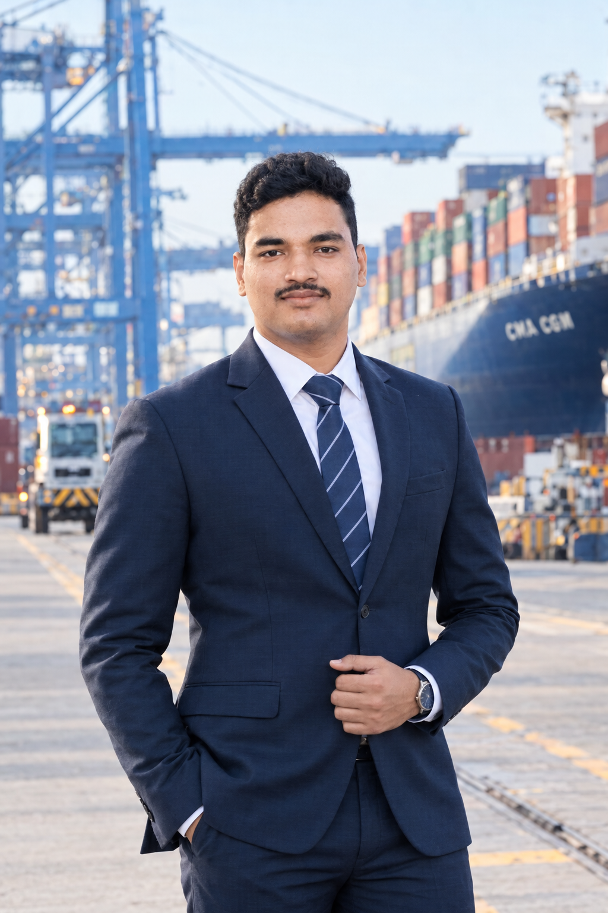

CHENNAI, INDIA / LOGISTICS & SUPPLY CHAIN
Moving Cargo.
Connecting Markets.
Building Operations.
Freight Forwarding · EXIM · SAP EWM · Ports & Terminals
GLOBAL LOGISTICS IN MOTIONAIR • OCEAN • ROAD • PROJECT CARGO
GLOBAL
LOGISTICSDESTINATION
LOGISTICSDESTINATION
AIR CARGOOCEAN FREIGHTROAD FREIGHTODC / OOG

PORTS / FREIGHT / EWMOCEAN FREIGHT
PORT OPERATIONS
ODC / OOG
FREIGHT FORWARDING ✦ IMPORT / EXPORT ✦ SHIPMENT COORDINATION ✦ PORT & TERMINAL OPERATIONS ✦ SAP EWM ✦ PROJECT CARGO ✦ ODC / OOG ✦
CAREER SNAPSHOT
01 / ABOUT
LOGISTICS WITH AN OPERATIONS MINDSET
From customer requirements to real-world movement.
Logistics and Supply Chain professional with hands-on experience in freight forwarding, logistics sales, shipment coordination and import/export documentation. Experienced in customer coordination, freight quotations, follow-ups and collaboration with operations and pricing teams.
My career direction is toward Port and Terminal Operations, with a strong interest in project cargo, ODC/OOG cargo handling and port-related projects.
02 / PROFESSIONAL EXPERIENCE
05/2025 — PRESENT
LOGISTICS INTEGRATORS (I) PVT. LTD.
Logistics Sales Executive
Generate freight-forwarding business leads through customer prospecting, coordination, follow-ups and relationship management. Coordinate with operations and pricing teams for freight quotations, shipment requirements and customer support.
07/2024 — 08/2024
I GREEN SHIPPING & LOGISTICS PVT. LTD.
Import & Export Documentation Intern
Practical exposure to import/export documentation and customs filing procedures through ICEGATE, with working knowledge of Incoterms, container handling, shipment documentation and planning coordination.
03 / CAREER JOURNEY
2020B.Com
→2023MBA Logistics & SCM
→2024EXIM Documentation
→2025Logistics Sales
→NOWSAP EWM
→NEXTPorts / Project Cargo
04 / LOGISTICS ECOSYSTEM
What I work with.
01CustomerRequirement discovery
→02RFQShipment requirement
→03PricingQuotation coordination
→04FreightShipment coordination
→05DocumentationEXIM / ICEGATE basics
→06CHACustoms coordination
05 / FEATURED PROJECT
01Last-Mile Delivery
MBA RESEARCH / E-COMMERCE LOGISTICS
Last-Mile Delivery
at BigBasket.
207Respondents
SPSSAnalysis Tool
Studied factors affecting customer satisfaction in last-mile delivery and analyzed delivery performance, real-time tracking, delivery flexibility and shipping costs.
Delivery PerformanceReal-Time TrackingFlexibilityShipping Costs
06 / LOGISTICS KNOWLEDGE
01
Freight Forwarding
Customer requirements, quotations, follow-ups and shipment coordination.
02
EXIM Documentation
Import/export documentation, ICEGATE basics, Incoterms and customs processes.
03
Logistics Operations
Coordination with operations and pricing teams and practical CHA exposure.
04
SAP EWM
Extended Warehouse Management professional training.
05
Data Analysis
SPSS, MS Office and research-based logistics analysis.
06
Project Logistics Interest
Career interest in project cargo, ODC/OOG, ports and terminal operations.
07 / ACHIEVEMENTS
Milestones that shaped my journey.
Best Student of the Year
Recognized for active participation in academic, professional and extracurricular activities.
Business Club Secretary
Leadership and coordination responsibilities during MBA.
Twigs — 1st Prize
Tagore Engineering College.
08 / LEADERSHIP & EXTRACURRICULAR ACTIVITIES
MMA Programme
Coordinated student selection for participation in MMA programmes.
Best Manager Competition
Organised the “Best Manager” competition for college students as part of an intercollegiate event.
Student Exchange
Participated in a student exchange programme at LEAD School of Management, Kerala.
09 / EDUCATION & TRAINING
MBA — Logistics & Supply Chain Management
Dhanish Ahmed College of Engineering
CGPA 8.45B.Com — Corporate Secretaryship
Bharath Institute of Higher Education and Research
CGPA 8.49SAP Extended Warehouse Management
Professional training
Shipping, Finance & Computer Applications
Diploma in Shipping & Logistics · DCA · DFA
11 / LET'S CONNECT
Ready for the next
logistics challenge.
Open to opportunities aligned with logistics operations, freight forwarding, EXIM, warehouse operations, SAP EWM, ports and terminals.